생산자동화산업기사 (2015-03-08 기출문제)
1과목: 기계가공법 및 안전관리
1. -18㎛의 오차가 있는 블록 게이지에 다이얼 게이지를 영점 셋팅하여 공작물을 측정하였더니, 측정값이 46.78mm 이었다면 참값(mm)은?
- 46.960
- 46.798
- 46.762
- 46.603
(정답률: 62%)

2. 게이지 종류에 대한 설명 중 틀린 것은?
- pitch 게이지 : 나사 피치 측정
- thickness 게이지 : 미세한 간격(두께) 측정
- radius 게이지 : 기울기 측정
- center 게이지 : 선반의 나사 바이트 각도 측정
(정답률: 69%)
3. 표준 맨드릴(mandrel)의 테이퍼 값으로 적합한 것은?
- 1/10~1/20 정도
- 1/50~1/100 정도
- 1/100~1/1000 정도
- 1/200~1/400 정도
(정답률: 83%)
4. 공작기계에서 절삭을 위한 세 가지 기본운도에 속하지 않는 것은?
- 절삭운동
- 이송운동
- 회전운동
- 위치조정운동
(정답률: 53%)
5. 중량 가공물을 가공하기 위한 대형 밀링머신으로 플레이너와 유사한 구조로 되어있는 것은?
- 수직 밀링머신
- 수평 밀링머신
- 플래노 밀러
- 회전 밀러
(정답률: 73%)
6. 지름 50mm인 연삭숫돌을 7000rpm으로 회전 시키는 연삭작업에서, 지름 100mm인 가공물을 연삭숫돌과 반대방향으로 100rpm으로 원통 연삭할 때 접촉점에서 연삭의 상대속도는 약 몇 m/min 인가?
- 931
- 1099
- 1131
- 1161
(정답률: 67%)
7. 연삭숫돌바퀴의 구성 3요소에 속하지 않는 것은?
- 숫돌입자
- 결합제
- 조직
- 기공
(정답률: 55%)
8. 재해 원인별 분류에서 인적원인(불안전한 행동)에 의한 것으로 옳은 것은?
- 불충분한지지 또는 방호
- 작업장소의 밀집
- 가동 중인 장치를 정비
- 결함이 있는 공구 및 장치
(정답률: 82%)
9. 분할대에서 분할 크랭크 핸들을 1회전하면 스핀들은 몇 도(° ) 회전 하는가?
- 36°
- 27°
- 18°
- 9°
(정답률: 70%)
10. 가공물을 절삭할 때 발생되는 칩의 형태에 미치는 영향이 가장 적은 것은?
- 공작물 재질
- 절삭속도
- 윤활유
- 공구의 모양
(정답률: 73%)
11. 지름이 100mm인 가공물에 리드 600mm의 오른나사 헬리컬 홈을 깎고자 한다. 테이블 이송나사의 피치가 10mm인 밀링머신에서, 테이블 선회각을 tanα 로 나타낼 때 옳은 값은?
- 31.41
- 1.90
- 0.03
- 0.52
(정답률: 37%)
12. 수준기에서 1눈금의 길이를 2mm로 하고, 1눈금이 각도 5″(초)를 나타내는 기포관의 곡률반경은?
- 7.26 m
- 72.6 m
- 8.23 m
- 82.5 m
(정답률: 31%)
13. 특정한 제품을 대량 생산할 때 적합하지만, 사용범위가 한정되며 구조가 간단한 공작기계는?
- 범용 공작기계
- 전용 공작기계
- 단능 공작기계
- 만능 공작기계
(정답률: 75%)
14. 중량물의 내면 연삭에 주로 사용되는 연삭방법은?
- 트래버스 연삭
- 플렌지 연삭
- 만능 연삭
- 플래내터리 연삭
(정답률: 58%)
15. 블록 게이지의 부속 부품이 아닌 것은?
- 홀더
- 스크레이퍼
- 스크라이버 포인트
- 베이스 블론
(정답률: 66%)
16. 드릴링 머신에서 회전수 160rpm, 절삭속도 15m/min일 때, 드릴 지름(mm)은 약 얼마인가?
- 29.8
- 35.1
- 39.5
- 15.4
(정답률: 69%)
17. 선반에서 나사기공을 위한 분할너트(half nut)는 어느 부분에 부착되어 사용하는가?
- 주축대
- 심압대
- 왕복대
- 베드
(정답률: 51%)
18. 선반가공에서 양 센터작업에 사용되는 부속품이 아닌 것은?
- 돌림판
- 돌리개
- 맨드릴
- 브로치
(정답률: 74%)
19. 절삭온도와 절삭조건에 관한 내용으로 틀린 것은?
- 절삭속도를 증대하면 절삭온도는 상승한다.
- 칩의 두께를 크게 하면 절삭온도가 상승한다.
- 절삭온도는 열팽창 때문에 공작물 가공치수에 영향을 준다.
- 열전도율 및 비열 값이 작은 재료가 일반적으로 절삭이 용이하다.
(정답률: 67%)
20. 목재, 피혁, 직물 등 탄성이 있는 재료로 바퀴 표면에 부착시킨 미세한 연삭입자로써 버핑하기 전 가공물 표면을 다듬질하는 가공방법은?
- 폴리싱
- 롤러 가공
- 버니싱
- 숏 피닝
(정답률: 59%)
2과목: 기계제도 및 기초공학
21. 표면의 결 도시방법의 기호 설명이 옳은 것은?
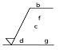
- d : 가공 방법
- g : 기준길이
- b : 줄무늬 방향 기호
- f : Ra 이외의 표면거칠기 값
(정답률: 69%)
22. 다음 중 도면의 내용에 따른 분류가 아닌 것은?
- 부품도
- 전개도
- 조립도
- 부분조립도
(정답률: 67%)
23. 구름 베어링 기호 중 안지름이 10mm인 것은?
- 7000
- 7001
- 7002
- 7010
(정답률: 75%)
24. 크롬 몰리브덴 강제의 KS 재료 기호는?
- SMn
- SMnC
- SCr
- SCM
(정답률: 76%)
25. 스크레이핑 가공기호는?
- FS
- FSU
- CS
- FSD
(정답률: 80%)
26. 구멍의 치수
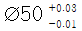
, 축의 치수는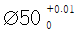
일 때, 최대 틈새는 얼마인가?- 0.04
- 0.03
- 0.02
- 0.01
(정답률: 69%)
27. 다음과 같이 3각법에 의한 투상도에서 누락된 정면도로 옳은 것은?
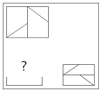
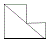
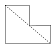
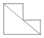
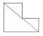
(정답률: 66%)
28. 다음과 같은 간략도의 전체를 표현한 것으로 가장 적합한 것은?
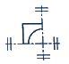
(정답률: 88%)
29. 재료 기호 “STC”가 나타내는 것은?
- 일반 구조용 압연 강재
- 기계 구조용 탄소 강재
- 탄소 공구강 강재
- 합금 공구강 강재
(정답률: 71%)
30. 그림과 같이 나사 표시가 있을 때, 옳은 것은?
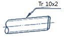
- 볼나사 호칭 지름 10인치
- 둥근나사 호칭 지름 10 mm
- 미터 사다리꼴 나사 호칭 지름 10mm
- 관용 테이퍼 수나사 호칭 지름 10mm
(정답률: 82%)
31. 전류의 단위인 A와 같은 것은? (단, C는 쿨롱, J는 주울, Ω은 저항, s는 시간, m은 거리를 표시하는 단위이다.)
- J/s
- J/C
- C/s
- Ω∙m
(정답률: 60%)
32. 한 변의 길이가 6인 정삼각형의 넓이는?
- 3√3
- 6√3
- 9√3
- 12√3
(정답률: 66%)
33. 두 자동차 A, B가 직선 도로상에서 각각 30[km/h], 40[km/h]의 일정한 속력으로 같은 남쪽 방향으로 달리고 있다. 자동차 B에서 본 자동차 A의 상대 속도의 크기와 방향은?
- 10 [km/h], 남쪽
- 10 [km/h], 북쪽
- 30 [km/h], 남쪽
- 30 [km/h], 북쪽
(정답률: 79%)
34. 400[W]의 전기 밥솥을 하루에 2시간씩 30일간 사용한 경우에 소비되는 전력량[kWh]은?
- 12
- 24
- 36
- 48
(정답률: 82%)
35. 1[erg]의 일이란?
- 1[N]의 힘이 작용하여 물체를 힘의 방향으로 1[m] 변위시키는 일
- 1[N]의 힘이 작용하여 물체를 힘의 방향으로 1[cm] 변위시키는 일
- 1[dyn]의 힘이 작용하여 물체를 힘의 방향으로 1[m] 변위시키는 일
- 1[dyn]의 힘이 작용하여 물체를 힘의 방향으로 1[cm] 변위시키는 일
(정답률: 52%)
36. 축의 굽힘 모멘트[M]에 대한 설명으로 틀린 것은?
- 굽힘 모멘트는 축의 단면계수에 비례한다.
- 굽힘 모멘트는 축의 허용 굽힘응력에 비례한다.
- 굽힘 모멘트는 축 지름의 세제곱에 비례한다.
- 굽힘 모멘트는 무차원 단위를 갖는다.
(정답률: 64%)
37. 바하(Bach)의 축 공식에서 연강축의 길이 1[m]당 비틀림각은 몇 도 이내로 제한하는가?
- 1/4
- 1/6
- 1/8
- 1/10
(정답률: 64%)
38. 그림과 같이 100[N]의 물체를 단면적 5[mm2]의 강선으로 매달았을 때 AB쪽에 발생하는 장력(F1)과 응력의 크기는?
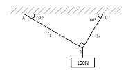
- 50√3[N], 10√3[N/mm2]
- 55√3[N], 15[N/mm2]
- 55[N], 10[N/mm2]
- 50[N], 10[N/mm2]
(정답률: 43%)
39. 전기난로에 니크롬선이 병렬로 두 개 들어 있다. 한 개를 켤 때에 비해 두 개를 켤 때 이 전기난로의 전체 저항은 몇 배가 되는가?
- 2배
- 1배
- 1/2 배
- 1/4 배
(정답률: 61%)
40. 유압실린더의 원리는?
- 뉴턴의 법칙
- 아베의 원리
- 파스칼의 원리
- 베르누이의 법칙
(정답률: 85%)
3과목: 자동제어
41. 그림과 같이 전달함수가 직렬로 결합되어 있을 때 하나의 등가전달함수로 변환할 수 있다. 이를 옳게 표현한 것은?
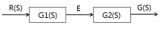
- G(S) = G1(S) · G2(S)
- G(S) = G1(S) + G2(S)
- G(S) = G1(S) - G2(S)
- G(S) = [G1(S) · G2(S)]/R(S)
(정답률: 70%)
42. 서보모터의 특징이 아닌 것은?
- 제어회로가 간단하다.
- 정 · 역회전이 자유롭다.
- 신속한 정지가 가능하다.
- 속도, 위치제어가 가능하다.
(정답률: 72%)
43. 공기압 실린더나 각종 제어 밸브가 원활히 작동 할 수 있도록 윤활유를 공급해 주는 장치는?
- 압력 조절기(regulator)
- 윤활기(lubricator)
- 공기 건조기(air dryer)
- 압력 제어기(controller)
(정답률: 89%)
44. 전달함수
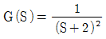
에서 w = 10[rad/sec]에서의 Bode 선도의 기울기(dB/dec)는?- -40
- -20
- 0
- 20
(정답률: 48%)
45. 물체의 위치, 각도, 자세 등의 변위를 제어량으로 하는 제어방식은?
- 서보제어
- 자동조정
- 추종제어
- 프로그램 제어
(정답률: 87%)
46. PLC 메모리부에 대한 설명으로 틀린 것은?
- 사용자 프로그램은 RAM에 보존된다.
- RAM 영역의 정보를 전지로 보존할 수 있다.
- EP-ROM에 쓰기(write)된 프로그램은 소거할 수 없다.
- PLC를 동작시키는 시스템 프로그램은 ROM에 존재한다.
(정답률: 69%)
47. 피드백 제어계의 특징으로 적합하지 않은 것은?
- 외부조건 변화에 대한 영향력을 줄일 수 있다.
- open loop 제어에 비해 정확성이 낮다.
- 출력값을 제어에 활용한다.
- 제어시스템의 구성이 복잡해진다.
(정답률: 82%)
48. PLC 프로그램 로더의 주요 기능이 아닌 것은?
- 프로그램 입력
- 전원 안정화
- 프로그램 모니터링
- 프로그램 편집
(정답률: 69%)
49. 유압밸브에서 온도가 변화하면 오일의 점도가 변화하여 유량이 변하게 된다. 이 때 유량변화를 막기 위하여 열팽창률이 높은 금속 봉을 이용하여 오리피스 개구 넓이를 작게 함으로써 유량변화를 보정하는 밸브는?
- 감압밸브
- 셔틀밸브
- 스로틀 체크밸브
- 압력 온도보상형 유량조정밸브
(정답률: 82%)
50. 다음 중 연속회전용 유압모터가 아닌 것은?
- 기어모터
- 베인모터
- 요동모터
- 회전피스톤 모터
(정답률: 61%)
51. 제어량을 어떤 일정한 목표값으로 유지하는 것을 목적으로 하는 장치제어에 속하지 않는 것은?
- 주파수 제어
- 발전기의 조속기
- 자동전압 조정장치
- 잉크젯 프린터 헤드 위치제어
(정답률: 77%)
52. 제어신호흐름선도 용어 중에서 밖으로 향하는 가지만 가진 것은?
- 경로
- 출력마디
- 입력마디
- 혼합마디
(정답률: 58%)
53. 드모르간 정리가 틀린 것은?
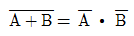
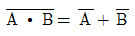
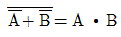
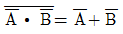
(정답률: 67%)
54. 시간함수
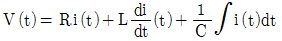
를 라플라스 함수로 변환한 식으로 옳음 것은?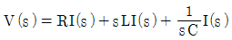
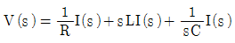
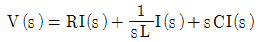
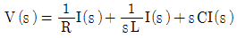
(정답률: 52%)
55. 라플라스 변환의 특징이 아닌 것은?
- 시간 영역에서 해석을 쉽게 한다.
- 미분방정식을 선형 방정식화 한다.
- 주파수 영역에 대한 해석을 쉽게 한다.
- 선형 시불변미분방정식의 해를 구하는데 사용할 수 있다.
(정답률: 53%)
56. 자동창고의 구성요소 중 다음 설명에 해당되는 것은?
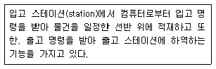
- 랙(rack)
- 컨베이어(conveyor)
- 컨트롤러(controller)
- 스태커 크레인(stacker crane)
(정답률: 76%)
57. 다음 블록선도에서 C(S)는?
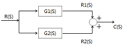
- C(S) = G1(S)+G2(S)
- C(S) = G1(S) · G2(S)
- C(S) = [G1(S) · G2(S)]R(S)
- C(S) = [G1(S)+G2(S)]R(S)
(정답률: 47%)
58. 1차 지연요소를 나타내는 전달함수는?
- 1+sT
- K/s
- Ks
- K/(1+sT)
(정답률: 73%)
59. UART를 이용한 데이터의 직렬(serial) 전송을 구성하기 위한 비트에 포함되지 않는 것은?
- 스톱
- 체크
- 스타트
- 패리티
(정답률: 54%)
60. 퍼지 제어의 특징이 아닌 것은?
- 추론에 의한 인간의 판단에 가까운 제어가 가능하다.
- 많은 관측지를 입력하여 조작량을 얻어 낼 수 있다.
- PID와 같은 선형 제어가 연산의 근본이다.
- 외란에 강하다.
(정답률: 55%)
4과목: 메카트로닉스
61. CPU에서 내부연산이나 메모리 엑세스 등의 작업을 위한 신호를 발생하는 요소는?
- 제어장치
- 플래그 레지스터
- 프로그램 카운터
- 산술논리연산 유닛
(정답률: 32%)
62. 반도체에 대한 설명으로 틀린 것은?
- N형 반도체의 다수 반송자는 정공이다.
- P형 반도체의 소수 반송자는 전자이다.
- 진성반도체는 불순물로 오염되지 않은 고순도의 반도체이다.
- P형 반도체는 Ge, Si의 결정에 제 3족의 원소를 미량 첨가하여 만든 반도체이다.
(정답률: 52%)
63. 다음 중 위치검출용 스위치로 쓰이는 것은?
- 버튼 스위치
- 리밋 스위치
- 셀렉터 스위치
- 나이프 스위치
(정답률: 81%)
64. 다음 기억장치들 중 재생 전원이 필요한 것은?
- EEPROM
- PROM
- SRAM
- DRAM
(정답률: 66%)
65. 컨베이어 벨트 위를 지나가는 종이 상자를 감지 할 수 없는 센서는?
- 유도형 센서
- 용량형 센서
- 포토 센서
- 적외선 센서
(정답률: 74%)
66. 직육면체 공작물을 이상적으로 위치결정하려고 할 때 총 몇 개의 위치결정 구가 필요한가?
- 3
- 5
- 6
- 7
(정답률: 76%)
67. 아날로그 신호를 컴퓨터가 인식할 수 있는 정보량으로 변환하는데 가장 필요한 것은?
- 메모리
- A/D 변환기
- D/A 변환기
- 저역통과 여파기
(정답률: 83%)
68. 감은 횟수 30회의 코일에 0.4[A]의 전류가 흐를 때 2×10-3[Wb]의 자속이 발생하였다. 이 때 자체 인덕턴스[H]값은?
- 0.15
- 0.8
- 1
- 12
(정답률: 43%)
69. 이상적인 연산 증폭기의 특징 설명 중 틀린 것은?
- 입력 저항은 수십[kΩ]이내이다.
- 출력 저항은 0 에 가깝다.
- 전압 이득은 무한대이다.
- 대역폭은 무한대이다.
(정답률: 68%)
70. 연산 증폭기(OP 앰프)의 설명 중 틀린 것은?
- 전압 증폭도는 대단히 크다.
- 대표적인 아날로그 IC 이다.
- 입력 및 출력 임피던스는 대단히 적은 편이다.
- 가 · 감산 등의 계산이나 미 · 적분 등의 연산도 가능하다.
(정답률: 70%)
71. 공진시 직렬 RLC 회로의 위상각은?
- -90°
- +90°
- 0°
- 리액턴스에 의존
(정답률: 64%)
72. 아래의 그림의 논리회로 기호는?
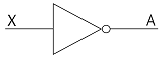
- OR 회로
- NOR 회로
- NOT 회로
- NAND 회로
(정답률: 79%)
73. 8진수 37.2를 10진수로 변환한 것으로 옳은 것은?
- 31.2
- 31.25
- 37.2
- 37.25
(정답률: 62%)
74. 산업용 로봇에서 서보 레디(servo ready)란?
- 정의된 위치 데이터를 키보드로 직접 입력하는 것
- 컨트롤러에서 이상 유무를 확인 점검하는 신호
- 아날로그 타입에서 모터 드라이버로 출력하는 속도 명령어 신호
- 전원 공급 후 컨트롤러가 이상 유무를 확인하기 전에 모터 드라이버 측에서 컨트롤러로 보내는 준비 신호
(정답률: 81%)
75. 슬로터의 구성요소가 아닌 것은?
- 회전 테이블
- 호브
- 베드
- 램
(정답률: 49%)
76. 게이지 블록으로 치수 조합하는 방법을 설명한 것으로 틀린 것은?
- 조합의 개수를 최소로 한다.
- 정해진 치수를 고를 때는 맨 끝자리부터 고른다.
- 소수점 아래 첫째자리 숫자가 5보다 큰 경우 5를 뺀 나머지 숫자부터 고른다.
- 두꺼운 것과 얇은 것과의 밀착은 두꺼운 것을 얇은 것의 전체에 맞추면서 밀착한다.
(정답률: 76%)
77. DC모터에서 토크는 전류와 어떠한 관계가 있는가?
- 반비례
- 비례
- 제곱에 반비례
- 제곱에 비례
(정답률: 67%)
78. 직접 주소지정방식의 특징이 아닌 것은?
- 주소지정 방식 중 가장 빠르다.
- 대용량 기억장치의 주소를 나타내는데 적합하다.
- 메모리 참조는 하지 않고 데이터를 처리하는 방식이다.
- 데이터 길이에 제약을 받는다.
(정답률: 53%)
79. 유도 전기장이 생기는 경우는?
- 전기장이 일정할 때
- 자기장이 일정할 때
- 자기장이 변할 때
- 전기장이 변할 때
(정답률: 67%)
80. 다음 진리표의 논리식으로 옳은 것은?
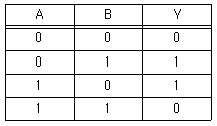
- Y = A+B
- Y = A·B
- Y = A⊕B
- Y = A-B
(정답률: 82%)